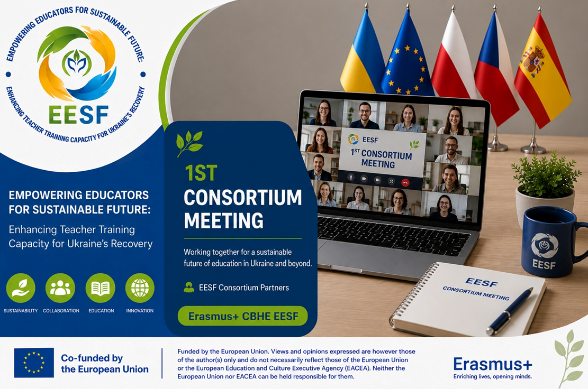

Відбулася перша зустріч консорціуму проєкту Erasmus+ CBHE EESF
У межах реалізації проєкту Erasmus+ CBHE №101237551 EESF «Empowering Educators for Sustainable Future: Enhancing Teacher Training Capacity for Ukraine’s Recovery» відбулася перша зустріч консорціуму партнерських організацій.
Під час зустрічі учасники обговорили результати діяльності, реалізованої на початковому етапі проєкту, а також окреслили ключові завдання на найближчий період. Особливу увагу було приділено виконанню робочого плану, координації діяльності партнерів, питанням звітування, поширення результатів проєкту та подальшому розвитку спільних ініціатив.
Координаторка проєкту, Тетяна Матусевич, представила огляд уже досягнутих результатів та пріоритетних напрямів роботи для партнерів з України та країн Європейського Союзу. Окремо було розглянуто питання комунікації, інформаційного супроводу проєкту та виконання зобов’язань усіх учасників консорціуму.
Зустріч стала важливою платформою для обговорення поточного прогресу проєкту та забезпечення ефективної співпраці між партнерами задля досягнення спільної мети – посилення спроможності педагогічної освіти для сталого розвитку та відновлення України.
Funded by the European Union. Views and opinions expressed are however those of the author(s) only and do not necessarily reflect those of the European Union or the European Education and Culture Executive Agency (EACEA). Neither the European Union nor EACEA can be held responsible for them.
